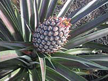

สับปะรด (ชื่อวิทยาศาสตร์: Ananas comosus) เป็นพืชล้มลุกชนิดหนึ่งที่มีต้นกำเนิดมาจากบริเวณทวีปอเมริกาใต้ ลำต้นมีขนาดสูงประมาณ 80–100 เซนติเมตร การปลูกสามารถปลูกได้ง่ายโดยการฝังกลบหน่อหรือส่วนยอดของผลที่เรียกว่า จุก เปลือกของผลสับปะรดภายนอกมีลักษณะคล้ายตาล้อมรอบผล เป็นผลไม้เขตร้อนที่มีความสำคัญทางเศรษฐกิจเป็นอันดับสามของโลก โดยรัฐฮาวายเป็นแหล่งเพาะปลูกสับปะรดที่สำคัญของสหรัฐอเมริกา และในปี ค.ศ. 2016 คอสตาริกา, บราซิล และฟิลิปปินส์มีสัดส่วนการผลิตสับปะรดเกือบ 1 ใน 3 ของโลก แต่ละท้องถิ่นในประเทศไทยเรียกสับปะรดแตกต่างกันออกไป
รูปลักษณะ ไม้ล้มลุกอายุหลายปี สูง 90–100 ซม. มีลำต้นอยู่ใต้ดิน ใบเดี่ยวเรียงสลับ ซ้อนกันถี่มากรอบต้น กว้าง 6.5 ซม. ยาวได้ถึง 1 เมตร ไม่มีก้านใบ ดอกช่อออกจากกลางต้น มีดอกย่อยจำนวนมาก ผลเป็นผลรวม รูปทรงกระบอก มีใบเป็นกระจุกที่ปลาย สับปะรดเป็นพืชใบเลี้ยงเดี่ยว สามารถทนต่อสภาพแวดล้อมต่าง ๆ ได้ดี เป็นพืชเศรษฐกิจที่สำคัญ เมื่อเจริญเป็นผลแล้วจะเจริญต่อไปโดยตาที่ลำต้นจะเติบโตเป็นต้นใหม่ได้อีก และสามารถดัดแปลงเป็นไม้ประดับได้อีกด้วย
| คุณค่าทางโภชนาการต่อ 100 กรัม | ||
|---|---|---|
| คาร์โบไฮเดรต | 12.63 | กรัม |
| น้ำตาล | 9.26 | กรัม |
| ใยอาหาร | 1.4 | กรัม |
| ไขมัน | 0.12 | กรัม |
| โปรตีน | 0.12 | กรัม |